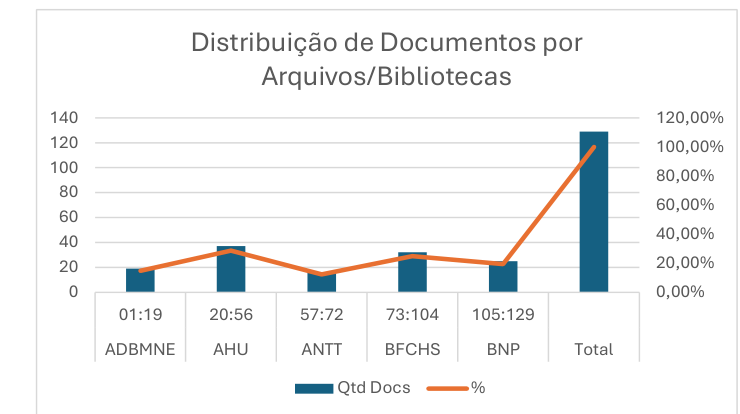
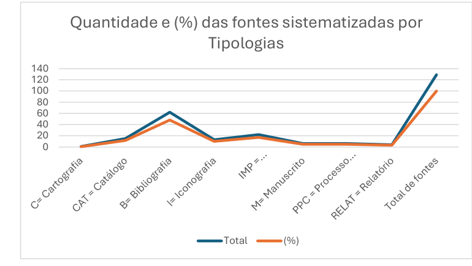

Mapa da África conectado: Continente em terracota com rede de pontos e linhas neon – representa território mapeado digitalmente, cada nó é uma história, um dado, uma comunidade.
No presente mapeamento foi possível sistematizar e catalogar 129 (cento e vinte nove) fontes históricas, distribuídas em três arquivos públicos e duas bibliotecas, sendo uma biblioteca pública e outra pertencente à esfera privada. Deste total de fontes, 30 (trinta) refere-se a fontes primárias (cartografia, iconografias, manuscritos, processos civis políticos e relatórios) e 99 (noventa e nove) são fontes secundárias (catálogos, bibliografias e impressos - jornais e boletins).
Nos arquivos públicos chegamos a um quantitativo de 72 (setenta e duas) fontes, equivalente a 55,81% das fontes coletadas. Quanto às bibliotecas, foi possível catalogar 57 (cinquenta e sete) fontes, que correspondem a 44,19% das fontes totais sistematizadas. Entre as instituições pesquisadas de acordo com o Gráfico e Tabela 1, concentram-se documentos no AHU com 28,68% (37), seguido pela BFCHS com 24,81% (32) e a BNP com 19,38% (25). Adiciona-se os documentos mapeados no ADBMNE com 14,73% (19) e o ANTT com 12,40% (16).

Fontes: ADBMNE, AHU, ANTT, BFCHS, BNP, 2015.
| Arquivos | Numeração | Qtd Docs | % |
|---|---|---|---|
| ADBMNE | 01:19 | 19 | 14,73% |
| AHU | 20:56 | 37 | 28,68% |
| ANTT | 57:72 | 16 | 12,40% |
| BFCHS | 73:104 | 32 | 24,81% |
| BNP | 105:129 | 25 | 19,38% |
| Total | 129 | 100,00% | |
Fontes: ADBMNE, AHU, ANTT, BFCHS, BNP, 2015.
Dentre os tipos de fontes consolidadas pela sistematização de acordo com a Tabela 2 e o Gráfico 2, destacam-se as fontes bibliográficas com 48,06% (62), seguida pelas fontes impressas com 17,05% (22) e os catálogos que representam 11,63% (15). A iconografia representa 10,08% (13) das fontes, enquanto, o manuscrito e o processo político/civil, representam cada um, 4,65% (6). Os relatórios e a cartografia completam a consolidação das fontes com 3,1% (4) e 0,78% (1) respectivamente.
| Tipo de Fontes | ADBMNE | AHU | ANTT | BFCHS | BNP | Total | (%) |
|---|---|---|---|---|---|---|---|
| C= Cartografia | 0 | 0 | 0 | 0 | 1 | 1 | 0,78 |
| CAT = Catálogo | 0 | 13 | 0 | 2 | 0 | 15 | 11,63 |
| B= Bibliografia | 11 | 15 | 0 | 29 | 7 | 62 | 48,06 |
| I= Iconografia | 0 | 0 | 3 | 0 | 10 | 13 | 10,08 |
| IMP = Impresso/Jornal-Boletim | 1 | 9 | 6 | 0 | 6 | 22 | 17,05 |
| M= Manuscrito | 2 | 0 | 3 | 0 | 1 | 6 | 4,65 |
| PPC = Processo Político e Civil | 5 | 0 | 1 | 0 | 0 | 6 | 4,65 |
| RELAT = Relatório | 0 | 0 | 3 | 1 | 0 | 4 | 3,10 |
| Total de fontes | 19 | 37 | 16 | 32 | 25 | 129 | 100 |
Fontes: ADBMNE, AHU, ANTT, BFCHS, BNP, 2015.

Fontes: ADBMNE, AHU, ANTT, BFCHS, BNP, 2015.
Vale ressaltar que dentre as 129 (cento e vinte e nove) fontes históricas, somente 7 (sete) objetos digitais (documentos) não estão disponíveis para acesso no site. A partir da numeração adotada em nosso catálogo, os documentos que não podem ser acessados são os seguintes: ADBMNE – Docs. 8 e 12; AHU – Doc. 56; ANTT – Docs. 66, 67 e 68; BNP – Doc. 123.
Em virtude das fontes acima coletadas, fez-se necessário catalogar e sistematizar o acesso a tais fontes, através da criação de banco de dados que incialmente está organizado em planilhas Microsoft Excel. Toda a catalogação se deu através da identificação das seguintes categorias de dados, ou melhor, a definição dos metadados:
Descrição dos Metadados
O modelo da criação do banco de dados foi estruturado e armazenado em endereço da rede de alcance mundial. Essa contribuição tecnológica se deu a partir da colaboração do Prof. Dr. Luiz Machado e do bolsista/pesquisador Gabriel Borba, integrantes do curso Jogos Digitais do Instituto Federal de Educação, Ciência e Tecnologia da Bahia-IFBA, campus Lauro de Freitas.